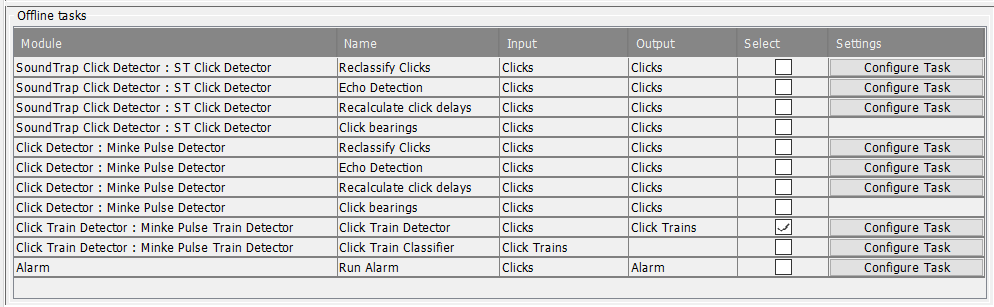

Whether you are planning to run jobs in Normal Mode to process raw data, or whether you plan to use Viewer Mode to run tasks on processed data, the Batch Processor module always runs in Normal Mode.
To configure the batch processor, start PAMGuard in normal mode with a new / blank configuration and add two modules: a database and the batch processor module.
No other modules should be added to the configuration, except perhaps a User Input module which would allow you to make notes about what you've been doing with the batch processor.
On no account should you add any Sound Processing, or Detection, Classification, or Localisation modules to this configuration which should now look something like the image below.
In the top left "Job Control" panel select either "Raw data processing (normal mode)" or "Offline tasks (viewer mode)" from the drop-down menu. When you change this selection you'll notice that the display panels below change slightly reflecting the different available options for each operation mode.
The detectors and other sound processing you want to perform on your data are all controlled from the Configuration panel at the top of the display. Here, you select the configuration file that you want to use to process all of your different batch jobs with exactly the same settings.
The most common thing to do, is to take a configuration file that you are already happy with, and have tested on some of the data, and select that configuration using the Browse button, however, you can also use the Browse button to create an empty configuration to work with andn then add the modules you require.
To view or modify the configuration, press "Launch Configuration". This will open the configuration in a separate PAMGuard window where you can view and modify any of the sound processing and detector settings.
Don't worry about which folder of sound files, database, and binary store are set in the configuration. These will all be overwritten with new values for each job when it runs.
Remember to save the configuration when you've made modification, or the changes may not get used when you come to process new data
Configuring offline tasks, such as re-running click classification, for Viewer mode is a bit more complicated than for the normal mode data processing. This is because each Viewer database already contains a copy of the configuration and the multiple databases and accompanying binary data may all have different configurations.
To address this, as with the normal mode processing, you'll use a psfx file to hold a master configuration for the tasks you want to run. As each task runs, the batch processor will check the configuration in the dataset about to be processed and will do its best to ensure that the configuration for the dataset is compatible with the task to run:
If the configurations differ considerably, there is no guarantee that the offline tasks will run correctly. For example if you were starting with two similar configurations, both of which had a click detector, but one was called "Click Detector" and the other configuration had called it "HF Click Detector" you'll not be able to use the same batch job configuration.
It's possible that you have some PAMGuard datasets, each consisting of a database and a folder of binary data, but no longer have the psfx file used to generate those datasets. There are three ways in which you can quite easily recreate the psfx file to use with the batch processor:
Offline tasks can have entirely new modules added and will process their offline tasks so long as the module would not normally work on raw input data. For instance, if you added a new Click Detector at this stage, nothing will happen because the click detector expects to process raw data. Your could however add a Click Train Detector to an existing configuration and it will search existing click detector output for click trains. Next time you open the datasets you processed with the additional detector you'll find it's added to the configuration and that the database has tables of detected click trains.
A list of available tasks will automatically be extracted from the master psfx file and displayed in the Offline tasks table in the lower half of the display. The list will reflect tasks available in the configuration you're working with. In this example the configuration has two click detectors, each of which has four standard tasks (click classification, echo detection, delay calculation, and bearing calculation). A Click Train Detector module, which has two offline tasks for detection and classification, is connected to the output of the Minke Pulse Detector and an Alarm module to the output of the SoundTrap Click Detector. The task panel therefore contains a total of 11 different tasks.
For each task, the table shows the PAMGuard module running the tasks, the name of the task, the input to the task and which data are modified by the task. There is also a column where you select which tasks you want to run (it probably won't be all of them) and a button for editing settings if they are available.
There are two ways of changing the task settings.
Previous: Batch Processor overview.